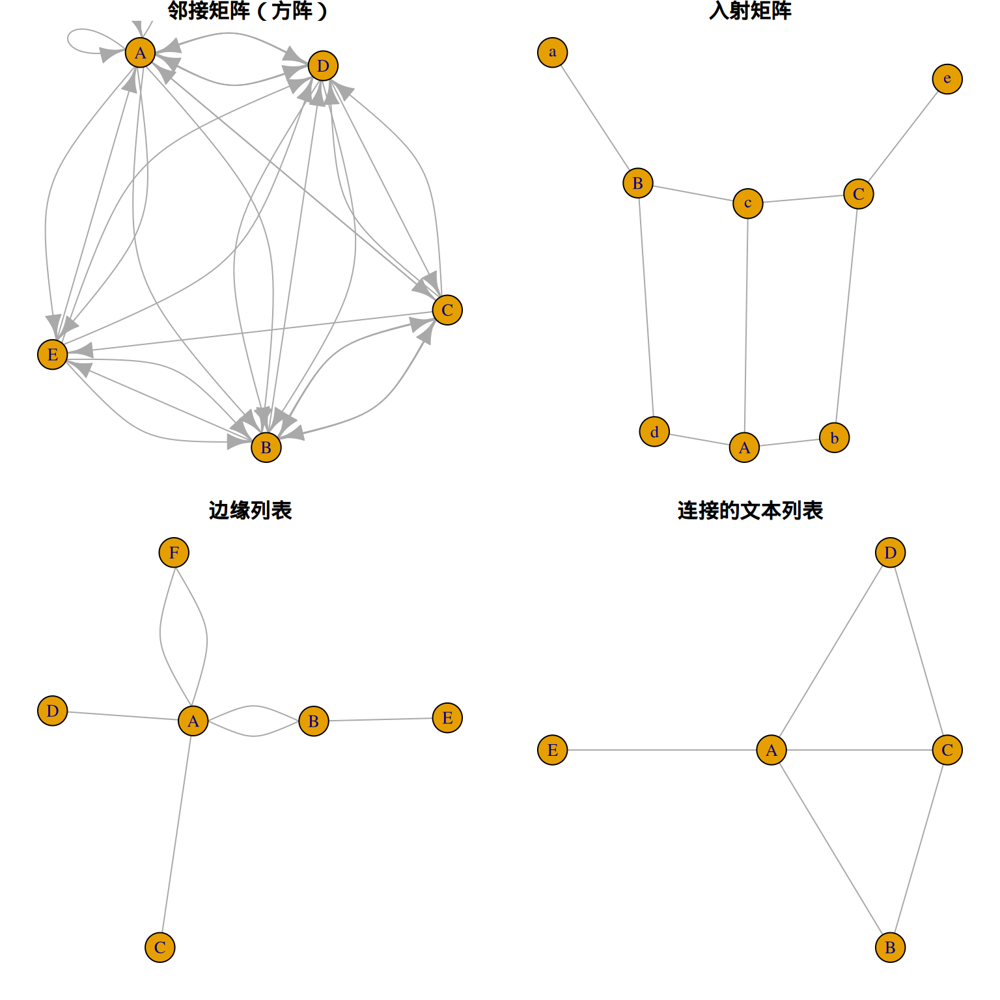
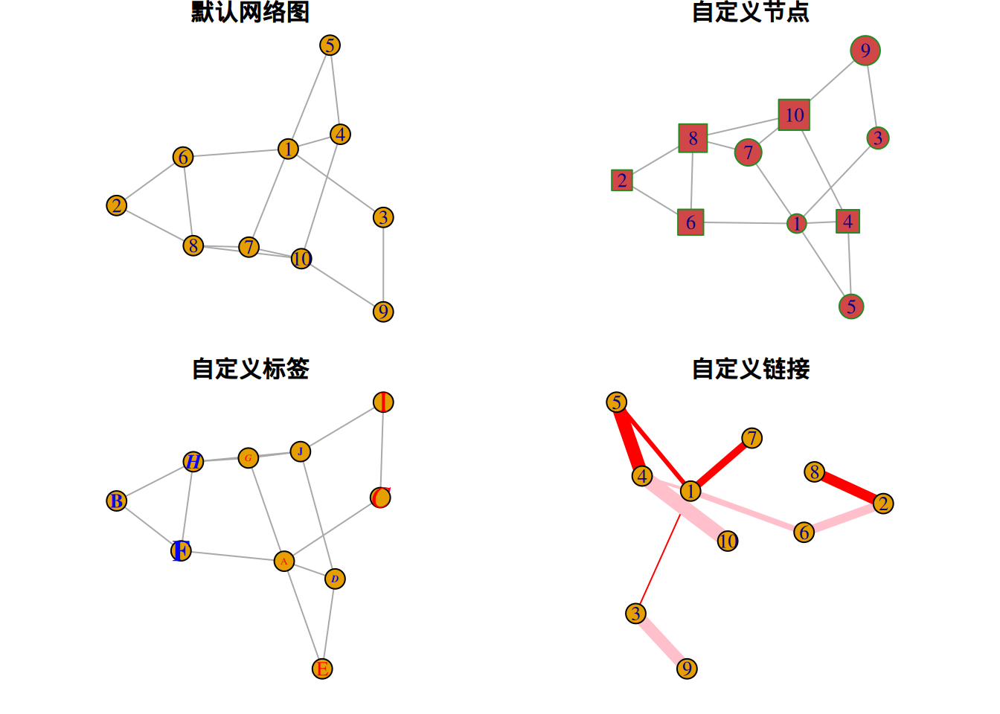
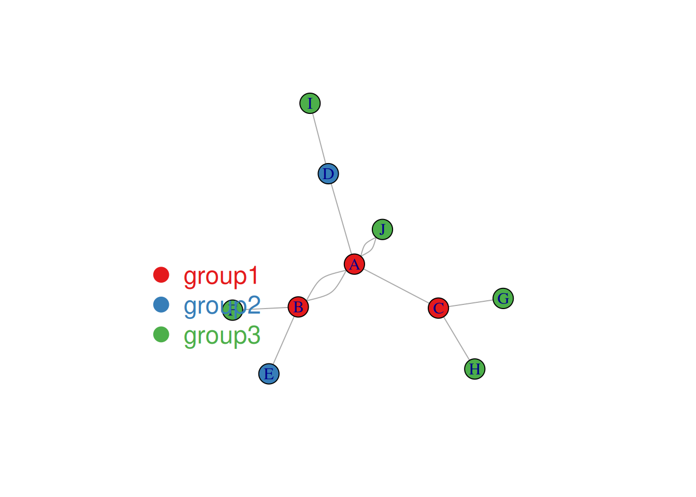
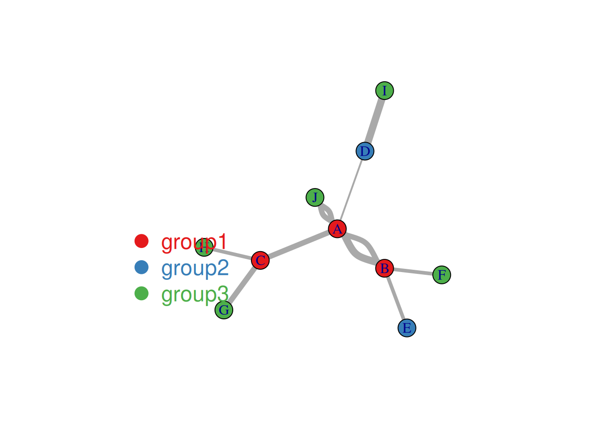
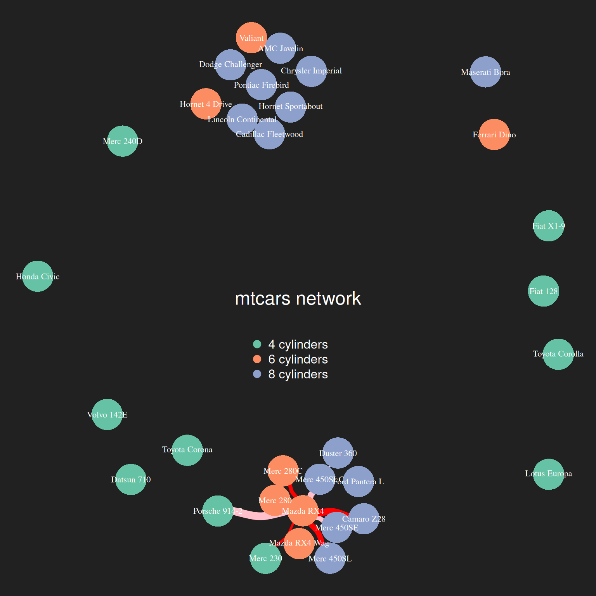

# 安装包
if (!requireNamespace("igraph", quietly = TRUE)) {
install.packages("igraph")
}
if (!requireNamespace("cowplot", quietly = TRUE)) {
install.packages("cowplot")
}
if (!requireNamespace("RColorBrewer", quietly = TRUE)) {
install.packages("RColorBrewer")
}
if (!requireNamespace("networkD3", quietly = TRUE)) {
install.packages("networkD3")
}
# 加载包
library(igraph)
library(cowplot)
library(RColorBrewer)
library(networkD3)网络图
网络图是一种图解模型，形状如同网络，由节点和链接组成，其中链接可为有向或无向。
示例

环境配置
系统要求： 跨平台（Linux/MacOS/Windows）
编程语言：R
依赖包：
igraph;cowplot;RColorBrewer;networkD3
数据准备
主要利用R自带数据集进行绘制
# network_pmat
## matcars数据集各指标相关性分析结果
data_pmat_links<- readr::read_csv("https://bizard-1301043367.cos.ap-guangzhou.myqcloud.com/data_mat.csv")
data_pmat_links <- na.omit(data_pmat_links)
colnames(data_pmat_links) <- c("from", "to", "p.log")
data_pmat_node <- colnames(mtcars)
network_pmat <- graph_from_data_frame(d=data_pmat_links, vertices=data_pmat_node, directed=F)
# data_mat
## mtcars聚类分析
## 计算相关系数矩阵
data_mat <- cor(t(mtcars[,c(1,3:6)]))
## 筛选高相关数据
data_mat[data_mat<0.995] <- 0网络图的输入数据类型
网络图的数据输入主要有四种：领接矩阵、入射矩阵、边缘矩阵和连接的文本列表。
这里我们用随机数据进行演示
##邻接矩阵（方阵）-----
set.seed(10)
data1 <- matrix(sample(0:2, 25, replace=TRUE), nrow=5)
colnames(data1) = rownames(data1) = LETTERS[1:5]
#创建graph图
network1 <- graph_from_adjacency_matrix(data1)
data1 A B C D E
A 2 2 1 2 2
B 0 2 2 1 1
C 1 2 1 2 1
D 2 2 1 1 0
E 1 2 0 2 0##入射矩阵（行列不一定相等，默认情况由行定向到列）-----
set.seed(1)
data2 <- matrix(sample(0:2, 15, replace=TRUE), nrow=3)
colnames(data2) <- letters[1:5] #小写字母
rownames(data2) <- LETTERS[1:3] #大写字母
#创建graph图
network2 <- graph_from_incidence_matrix(data2)Warning: `graph_from_incidence_matrix()` was deprecated in igraph 1.6.0.
ℹ Please use `graph_from_biadjacency_matrix()` instead.data2 a b c d e
A 0 1 2 2 0
B 2 0 1 2 0
C 0 2 1 0 1##边缘列表（两列分别表示源和目标）-----
links <- data.frame(
source=c("A","A", "A", "A", "A","F", "B"),
target=c("B","B", "C", "D", "F","A","E")
)
#创建graph图
network3 <- graph_from_data_frame(d=links, directed=F)
links source target
1 A B
2 A B
3 A C
4 A D
5 A F
6 F A
7 B E##连接的文本列表----
network4 <- graph_from_literal( A-B-C-D, E-A-E-A, D-C-A, D-A-D-C )四种数据类型绘图实例
#绘制----
par(mfrow=c(2,2), mar=c(1,1,1,1))
plot(network1, main="邻接矩阵（方阵）")
plot(network2, main="入射矩阵")
plot(network3, main="边缘列表")
plot(network4, main="连接的文本列表")
可视化
1. 节点、链接、标签自定义
#自定义----
#生成随机数据
set.seed(1)
data3 <- matrix(sample(0:1, 100, replace=TRUE, prob=c(0.8,0.2)), nc=10)
network5 <- graph_from_adjacency_matrix(data3 , mode='undirected', diag=F )
par(mfrow=c(2,2), mar=c(1,1,1,1))
#默认网络图
plot(network5, main = "默认网络图")
#自定义节点
plot(network5,
vertex.color = rgb(0.8,0.2,0.2,0.9), # 颜色
vertex.frame.color = "Forestgreen", # 边框颜色
vertex.shape=c("circle","square"), # 节点形状，可选：“none”, “circle”, “square”, “csquare”, “rectangle” “crectangle”, “vrectangle”, “pie”, “raster”, “sphere”
vertex.size=c(15:24),
main = "自定义节点"
)
#自定义标签
plot(network5,
vertex.label=LETTERS[1:10], # 标签内容
vertex.label.color=c("red","blue"),
vertex.label.family="Times", # 字体
vertex.label.font=c(1,2,3,4), # 字体
vertex.label.cex=c(0.5,1,1.5), # 字体大小
vertex.label.dist=0, # 标签与节点的距离
vertex.label.degree=0, # 标签位置
main = "自定义标签"
)
#自定义链接
plot(network5,
edge.color=rep(c("red","pink"),5), # 链接颜色
edge.width=seq(1,10), # 链接宽度
edge.arrow.size=1, # 箭头大小
edge.arrow.width=1, # 箭头宽度
edge.lty=c("solid"), # 链接线条类型
main = "自定义链接"
)
2. 布局
可以根据需要使用不同的网络图布局，比如sphere、circle、random、fruchterman.reingold等。
#布局（layout）----
#生成随机数据
data4 <- matrix(sample(0:1, 400, replace=TRUE, prob=c(0.8,0.2)), nrow=20)
network6 <- graph_from_adjacency_matrix(data4 , mode='undirected', diag=F )
#不同的layout布局
par(mfrow=c(2,2), mar=c(1,1,1,1))
plot(network6, layout=layout.sphere, main="sphere")
plot(network6, layout=layout.circle, main="circle")
plot(network6, layout=layout.random, main="random")
plot(network6, layout=layout.fruchterman.reingold, main="fruchterman.reingold")
3. 变量映射到节点和连接
3.1 变量分类映射到节点
##映射到节点
#生成随机数据
links <- data.frame(
source=c("A","A", "A", "A", "A","J", "B", "B", "C", "C", "D","I"),
target=c("B","B", "C", "D", "J","A","E", "F", "G", "H", "I","I"),
importance=(sample(1:4, 12, replace=T))
)
nodes <- data.frame(
name=LETTERS[1:10],
carac=c( rep("group1",3),rep("group2",2), rep("group3",5))
)
#igraph图
network <- graph_from_data_frame(d=links, vertices=nodes, directed=F)
#颜色
coul <- brewer.pal(3, "Set1")
#颜色向量
my_color <- coul[as.numeric(as.factor(V(network)$carac))]
#绘图
plot(network, vertex.color=my_color)
#添加标签
legend("bottomleft",
legend=levels(as.factor(V(network)$carac)) ,
col = coul , bty = "n", pch=20 , pt.cex = 3, cex = 1.5, text.col=coul ,
horiz = FALSE, inset = c(0.1, 0.1))
上图中节点颜色代表分类
3.2 变量映射到链接
## 映射到链接
plot(network, vertex.color=my_color, edge.width=E(network)$importance*2 )
legend("bottomleft",
legend=levels(as.factor(V(network)$carac)) ,
col = coul ,
bty = "n",
pch=20 ,
pt.cex = 3,
cex = 1.5,
text.col=coul,
horiz = FALSE,
inset = c(0.1, 0.1))
上图展示了mtcars数据集各指标的相关性分析结果（α=0.01），使用边缘列表的数据输入类型。链接表示两个指标具有相关性，链接的粗细代表p值的-log10，链接越粗表示结果越可靠。
4. 节点大小映射连接数
这里可以使用degree函数计算连接数
##节点大小对应链接数（degree函数）----
#计算链接数
deg <- degree(network_pmat, mode="all")
#绘图
plot(network_pmat,
vertex.size=deg*6,
layout=layout.circle,
vertex.color=rgb(0.1,0.7,0.8,0.5),
edge.width=E(network_pmat)$value*0.5)
上图中节点大小代表该节点的链接数（与之相关的指标数）。
5. 聚类结果可视化
这里以mtcars数据集为例进行聚类分析
# 聚类结果可视化----
# 建立igraph图
network <- graph_from_adjacency_matrix( data_mat, weighted=T, mode="undirected", diag=F)
# 颜色，建立映射，不同颜色表示不同cyl
coul <- brewer.pal(nlevels(as.factor(mtcars$cyl)), "Set2")
my_color <- coul[as.numeric(as.factor(mtcars$cyl))]
# 绘制
par(bg="grey13", mar=c(0,0,0,0))
set.seed(4)
plot(network,
vertex.size=12,
vertex.color=my_color,
vertex.label.cex=0.7,
vertex.label.color="white",
vertex.frame.color="transparent",
edge.color=rep(c("red","pink"),5),
edge.width=seq(1,10),
edge.arrow.size=1,
edge.arrow.width=1,
edge.lty=c("solid"),
edge.curved=0.3
)
# 添加标题与标签
text(0,0,"mtcars network",col="white", cex=1.5)
legend(x=-0.2, y=-0.12,
legend=paste( levels(as.factor(mtcars$cyl)), " cylinders", sep=""),
col = coul ,
bty = "n", pch=20 , pt.cex = 2, cex = 1,
text.col="white" , horiz = F)
上图展示了以mpg、disp、gp、drat为依据对mtcars数据集进行聚类分析的结果。不同颜色表示不同的cyl。
6. 3D交互网络图
使用networkD3包可以实现网络图的3D交互。
##交互（networkD3）----
p <- simpleNetwork(data_pmat_links, height="100px", width="100px")
p3D交互网络图
可以利用交互实现高亮显示、拖拽等功能（上图为拖拽carb节点）
应用场景

上图为实验对照组受试者的运动网络。（A）在每个半球的双侧识别出与 PMC、SMA、PMA 和 SPL 对应的区域的质心的单个体素。（B）计算每个区域之间的成对 Pearson 互相关系数，构建邻接矩阵。（C）从互相关的邻接矩阵构建加权无向网络图。（D）使用 0.08–0.15 Hz 频段的一致性构建邻接矩阵，构建加权无向网络图，与互相关得出的图相似。 [1]
参考文献
[1] Otten ML, Mikell CB, Youngerman BE, Liston C, Sisti MB, Bruce JN, Small SA, McKhann GM 2nd. Motor deficits correlate with resting state motor network connectivity in patients with brain tumours. Brain. 2012 Apr;135(Pt 4):1017-26. doi: 10.1093/brain/aws041. Epub 2012 Mar 8. PMID: 22408270; PMCID: PMC3326259.
[2] Csardi G, Nepusz T (2006). “The igraph software package for complex network research.” InterJournal, Complex Systems, 1695. https://igraph.org.
[3] Wilke C (2024). cowplot: Streamlined Plot Theme and Plot Annotations for ‘ggplot2’. R package version 1.1.3, https://CRAN.R-project.org/package=cowplot.
[4] Neuwirth E (2022). RColorBrewer: ColorBrewer Palettes. R package version 1.1-3, https://CRAN.R-project.org/package=RColorBrewer.
[5] Allaire J, Gandrud C, Russell K, Yetman C (2017). networkD3: D3 JavaScript Network Graphs from R. R package version 0.4, https://CRAN.R-project.org/package=networkD3.